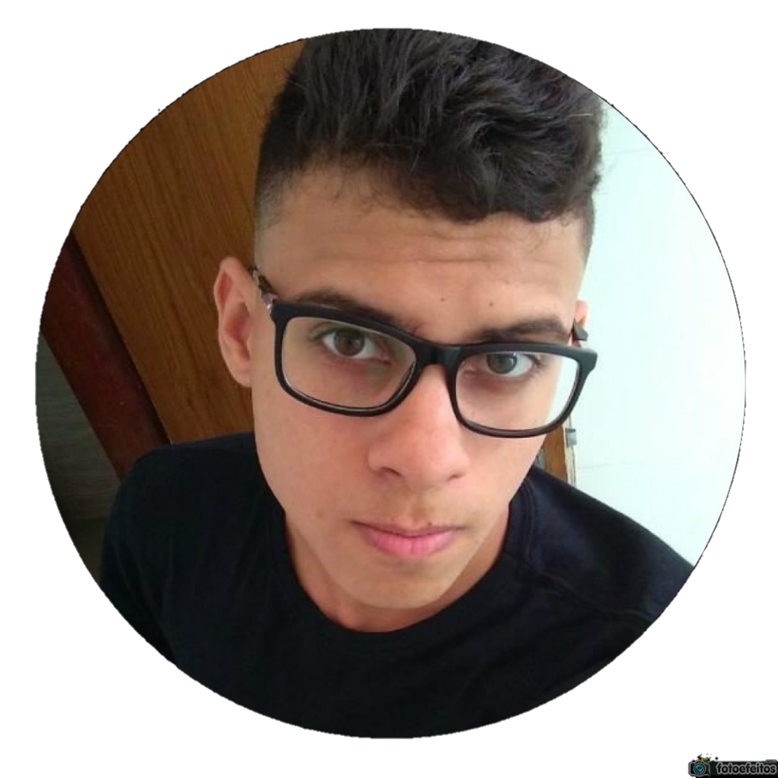

Eduardo Soares de Araujo Aquino


Olá, sou Eduardo Soares de Araujo Aquino, nasci em Campina Grande/PB e tenho 20 anos. Atualmente moro no municipio de Parnamirim/RN e estudei todo meu fundamental e médio em escola particular. Sempre tive vontade de aprender e aumentar ainda mais meus conhecimentos, mas nos tempos livres sempre busco me descontrair um pouco jogando algo online ou fazendo exercícios.
Hobbies
Sempre me destraio enquanto estudo, principalmente quando se refere a "dar uma pausa" dos estudos. Vejo filmes e séries nos tempos livres, gosto muito de jogar online e jogar futebol. Quando não estudo, vou programar algo...ou seja, mesmo na pausa eu estudo.
Curiosidades
Amo cores escuras, o que já podem ter notado no site. Meu signo é escorpião, mesmo não acreditando em signo, dizem que escorpião é sempre cuidadoso com as pessoas ao redor, realmente é uma das minhas características. Sou muito focado naquilo que quero, não desisto fácil das coisas. Meu filme favorito Piratas do Caribe, meu desenho favorito é Bob Esponja, meu anime favorito é Dragon Ball, minha série favorita é Vikings. Sou apaixonado pela física, astros e a natureza.